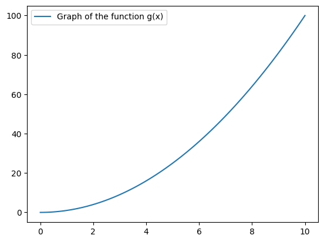

Section 2.4 — Calculus prerequisites#
This notebook contains all the code examples from Section 2.4 Calculus prerequisites of the No Bullshit Guide to Statistics.
Topics covered in this notebook:
Math definitions
Sets
Functions
Integrals as area calculations
Numerical integration using the
scipy.integratefunctionsquadandtrapzSymbolic integration using the
sympyfunctionintegrateBonus calculus topics
Limits
Derivatives
Fundamental theorem of calculus
# simple float __repr__
import numpy as np
np.set_printoptions(legacy='1.25')
Sets#
See formulas and definitions in the book.
S = {1, 2, 3}
T = {3, 4, 5, 6}
print("S ∪ T =", S.union(T))
print("S ∩ T =", S.intersection(T))
print("S \\ T =", S.difference(T))
S ∪ T = {1, 2, 3, 4, 5, 6}
S ∩ T = {3}
S \ T = {1, 2}
Functions#
In Python, we define functions using the def keyword.
For example, the code cell below defines the function \(g(x)=x^2\), then evaluate it for the input \(x=4\).
# define the function g that takes input x
def g(x):
return x**2
# calling the function g on input x=4
g(4)
16
Plotting the graph of the function \(g(x)\)#
The graph of the function \(g(x)\) is obtained by plotting a curve that passes through the set of input-output coordinate pairs \((x, g(x))\).
import numpy as np
import seaborn as sns
xs = np.linspace(0, 10, 100)
gxs = g(xs)
sns.lineplot(x=xs, y=gxs, label="Graph of the function g(x)");

The function linspace(0,10,100) creates an array of 100 points in the interval \([0,10]\).
We store this sequence of inputs into the variable xs.
Next, we computer the output value \(y = g(x)\) for each of the inputs in the array xs,
and store the result in the array gxs.
Finally, we use the function sns.lineplot() to generate the plot.
import numpy as np
np.sqrt(4)
2.0
np.log(4)
1.3862943611198906
Examples of function-followed-by-inverse-function calculations:
np.sqrt(4)**2
4.0
np.exp(np.log(4))
4.0
Integrals as area calculations#
See Figure XX in the book that shows the integral under \(f(x) = 3\) between \(a=0\) and \(b=5\).
See also Figure YY that shows the integral under \(g(x) = x\) between \(a=0\) and \(b=5\).
Computing integrals numerically using SciPy integrate methods#
There are numerous ways to compute integrals in Python. Computing integrals “numerically” means we’re splitting the region of integration into thousands or millions of sub-regions, computing the areas of these sub-regions, and adding up the result.
We’ll now show some examples using two of the functions form the module sympy.integrate:
quad(f,a,b): high-level function for computing areas (quadratures)trapz(ys,xs): low-level function for computing integral using trapezoid approximation
We’ll start with the quad function.
from scipy.integrate import quad
# define the constant function f(x) = c
def f(x):
c = 3
return c
# call the funtion f with input x=333
f(333)
3
quad(f, 0, 5)
(15.0, 1.6653345369377348e-13)
The function quad returns two numbers as output: the value of the integral and a precision parameter.
In output of the code, tells us the value of the integral is \(\int_0^5 3 dx\) is 15.0 and guarantees the accuracy of this value up to an error of \(10^{-13}\).
Since we’re usually only interested in the value of the integral, we often select the first output of quad so you’ll see the code like quad(...)[0] in all the code examples below.
quad(f, 0, 5)[0]
15.0
# define the function g(x) = x (line with slope 1)
def g(x):
return x
# call the funtion g with input x=10
g(10)
10
quad(g, 0, 5)[0]
12.5
Trapezoid approximation (optional)#
Let’s now use another approach based on the trapezoid approximation.
We must build array of inputs \(x\) and outputs \(g(x)\) of the function,
then pass it to trapz so it carries out the calculation.
from scipy.integrate import trapezoid
m = 1000
xs = np.linspace(0, 5, m)
gxs = g(xs)
trapezoid(gxs, xs)
12.5
Computing integrals symbolically using SymPy integrate#
%pip install -q sympy
Note: you may need to restart the kernel to use updated packages.
from sympy import symbols
# define symbolic variables
x, a, b, c = symbols('x a b c')
The symbols function creates SymPy symbolic variables.
Unlike ordinary Python variables that hold a particular value,
SymPy variables act as placeholders that can take on any value.
We can use the symbolic variables to create expressions, just like we do with math variables in pen-and-paper calculations.
Constant function \(f(x)=c\)#
fx = c
fx
We’ll use the SymPy function integrate for computing integrals.
We call this function
by passing in the expression we want to integrate as the first argument.
The second argument is a triple \((x,a,b)\),
which specifies the variable of integration \(x\),
the lower limit of integration \(a\),
and the upper limit of integration \(b\).
from sympy import integrate
integrate(fx, (x,a,b)) # = A_f(a,b)
The answer \(c\cdot (b-a)\) is the general expression for calculating the area under \(f(x)=c\), for between any starting point \(x=a\) and end point \(x=b\). Geometrically, this is just a height-times-width formula for the area of a rectangle.
To compute the specific integral between \(a=0\) and \(b=5\) under \(f(x)=3\),
we use the subs (substitute) method,
passing in a Python dictionary of the values we want to “plug” into the general expression.
integrate(fx, (x,a,b)).subs({c:3, a:0, b:5})
The integral function \(F_0(b) = \int_0^b f(x) dx\) is obtained as follows.
integrate(fx, (x,0,b)) # = F_0(b)
Line \(g(x)=x\)#
gx = 1*x
gx
integrate(gx, (x,a,b)) # = A_g(a,b)
integrate(gx, (x,a,b))
integrate(gx, (x,a,b)).subs({a:0, b:5})
integrate(gx, (x,a,b)).subs({m:3, a:0, b:5}).evalf()
Bonus: the integral function \(G_0(b) = \int_0^b g(x) dx\) is obtained as follows.
integrate(gx, (x,0,b)) # = G_0(b)
Other calculus topics#
from sympy import symbols
x, a, b, i, m, n = symbols("x a b i m n")
x
Let’s create a simple expression using the symbols.
expr = b + m*x
expr
Let’s look how SymPy represents this expression under the hood.
from sympy import srepr
srepr(expr)
"Add(Symbol('b'), Mul(Symbol('m'), Symbol('x')))"
Limits#
from sympy import limit, exp, oo
limit(exp(x)/x**100, x, oo)
# # EXAMPLE 2: ... consider segtment of length (b-a) cut into n parts
# delta = (b - a)/n
# zero length...
# limit(delta, n, oo)
# but still add up to whole interval...
# summation(delta, (i, 0, n-1))
Derivatives#
The derivative function of \(f(x) = mx +b\) is \(f'(x)=m\).
from sympy import diff
f = b + m*x
diff(f, x)
The derivative function of \(f(x) = \frac{c}{2}x^2\) is \(f'(x)=cx\).
f = c/2 * x**2
diff(f, x)
Here is another example of a complicated-looking function, that includes an exponential, a trigonometric, and a logarithmic function.
from sympy import log, exp, sin
f = exp(x) + sin(x) + log(x)
f
diff(f)
Optimization algorithms#
See wikipedia for the description of the gradient descent algorithm.
The code below implements a simplified version in one dimension, so we call it derivative descent.
def derivative_descent(f, x0=0, alpha=0.01, tol=1e-11):
"""
Computes the minimum of SymPy expression `f` using
the gradient descent algorithm in one dimension.
"""
x_i = x0
delta = float("inf")
while delta > tol:
df_at_x_i = diff(f, x).subs({x:x_i})
x_next = x_i - alpha*df_at_x_i
delta = abs(x_next - x_i)
x_i = x_next
return x_i
Let’s find the minimum value of the function \(f(x) = (x-5)^2\) using the derivative_descent algorithm.
f = (x-5)**2
argmin_f = derivative_descent(f)
argmin_f
The solution is roughly accurate to roughly tol*10 = 1e-10 decimals.
float(argmin_f - 5)
-4.874394221587863e-10
Using SciPy optimization functions#
Let’s solve the same optimization problem using the function minimize from scipy.optimize.
from scipy.optimize import minimize
def f(x):
return (x - 5)**2
res = minimize(f, x0=0)
res["x"][0] # = argmin f(x)
4.99999997455944
Riemann sums#
See this excerpt for a definition of the Riemann sum.
Fundamental theorem of calculus#
from sympy import diff, integrate, log, exp, sin
f = log(x) + exp(x) + sin(x)
F = integrate(f)
F
diff(F)
diff(integrate(f)) == f
True
integrate(diff(f)) == f
True